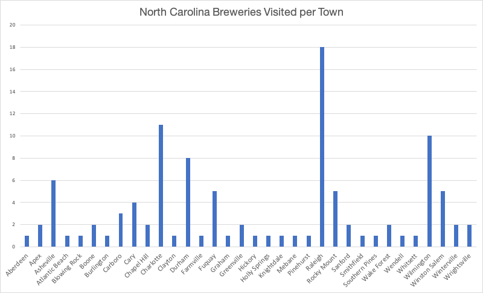

Before I moved to North Carolina I knew that there was a large beer industry. Little did I realize just how seriously the state takes its brewery scene. It's incredible! There are over 320 breweries in the state and my goal is to visit as many as possible. Raleigh has easily been the location with the most breweries that I have visited so far. Asheville, Charlotte, and the Triad are hotbeds, but RDU has a ton, and they are only adding more by the year. After 2.5 years here I have been to 108 and I have plenty of unchartered territory to discover.
